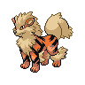

เลือกโปเกมอน
เปิดเมนู Party แล้วเลือกโปเกมอนขี่ได้ที่อยู่ในทีม
ขี่โปเกมอน 18 ตัวทั่วคันโต ตั้งแต่ Arcanine ที่วิ่งเร็ว ไปจนถึง Dragonite ที่บินข้ามสิ่งกีดขวางได้หลังจบลีก
ดูคู่มือไอเท็ม ↗

เปิดเมนู Party แล้วเลือกโปเกมอนขี่ได้ที่อยู่ในทีม
เลือก “Take out of Poké Ball” เพื่อให้โปเกมอนตามเรา แล้วตัวละครจะขี่อัตโนมัติ
Gyarados และ Lapras ขี่ได้บนผิวน้ำเมื่อใช้ Sea Skim; การบินสูงข้ามสิ่งกีดขวางปลดล็อกหลังชนะจตุรเทพ
การขี่ไม่ได้แทน Chop Down, Sea Skim หรือ Sky Dash ของพิคาชู การเดินทางทางน้ำยังต้องเรียน Sea Skim ก่อน ส่วน Charizard, Aerodactyl และ Dragonite จะบินสูงได้หลังชนะ Pokémon League
กดการ์ดเพื่อดูวิธีรับโปเกมอนแต่ละตัว